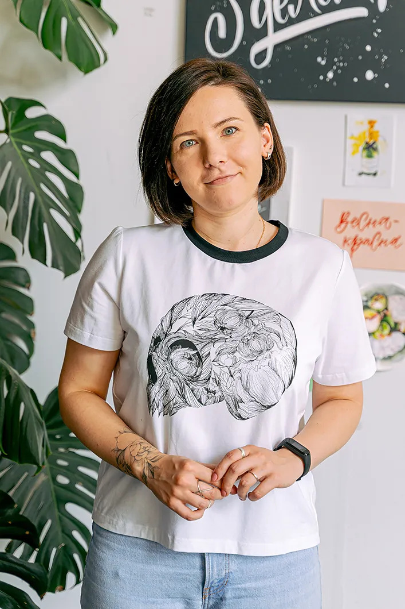
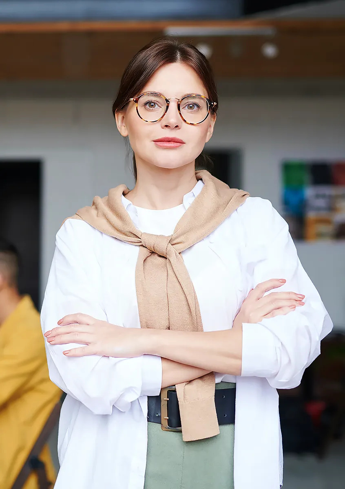

Penelope Sanchos
Spanish teacher
Penelope has over 6 years of teaching experience and teaches Spanish children and adults of all levels.

Philippe Montre
French teacher
Philip is a graduate of Sorbonne University and has been teaching French at our school for three years.

Jane Philips
English/Chinese teacher
Jane moved to Berlin from the UK and now teaches English and Chinese courses online and offline.
Andrew Zarenko
Ukrainian teacher
Andrey moved to Berlin in 2010 after graduating from a university with a degree in Ukrainian philology.